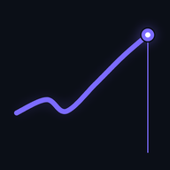

Loading
Portfolio
—
Stay on top
Your Daily Movers
Performance
Best performers
Portfolio insights
Next moves
Coming up
Goal
Built from your purchase history. Not financial advice.

Unlocking
Your holdings are encrypted on this device. Nothing is sent anywhere. If you forget this passcode only a backup can recover the data.
Open with a glance instead of typing. Your passcode keeps working as the recovery key.
Built from your purchase history. Not financial advice.